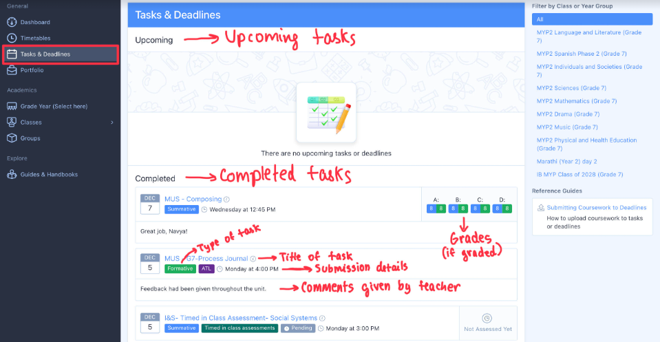
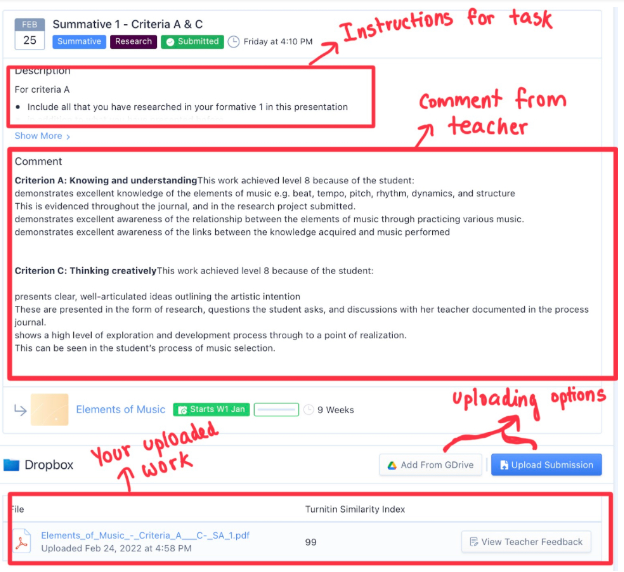
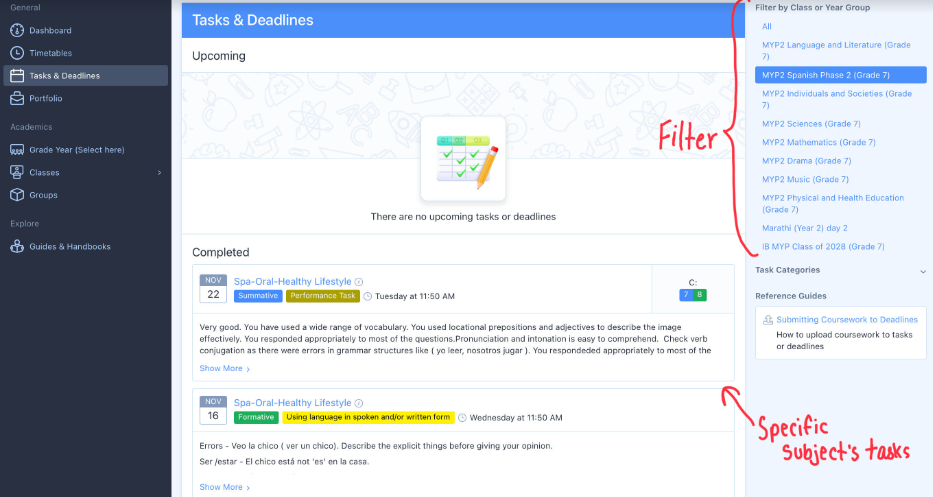

Your Tasks and Deadlines

The next feature that I'm going to take you through is tasks and deadlines. Here, you can see all your upcoming or completed tasks. They have separated your completed and upcoming tasks so it isn't confusing. All your tasks will most likely be summatives or formatives if they are to be done on ManageBac. Each task on ManageBac would either be a formative (not graded) or a summative (graded out of 8). In each of them, you can see the subject for the task, the title of the task, the deadline for the task and the type of task (eg. presentation, portfolio, on paper etc.). Furthermore, you also see your grades (if it is a summative) and which criteria you were graded on. Lastly, you can also see your submission status. Green is submitted early, orange is submitted late and grey is pending. However, sometimes when summatives are done on paper, you don't have to submit them on ManageBac, so sometimes it can come as pending, but your teachers know that you have completed it. Remember, all your grades come on ManageBac!

If you go onto one specific task (by clicking onto the title of the task), you can see all the details for it that your teacher has provided. Some of them are the instructions for the task, your teachers comment on your working, two different uploading options and your uploaded work. When uploading something onto a task, there are 2 options that you can chose from. Firstly, there is uploading from Google Drive and then there is a second option to upload from your own device. When uploading from your own device, you can upload files from your photo library or your downloads.

The last feature I want to point out in Tasks & Deadlines is the filter feature. Here, you can see tasks and deadlines from a specific subject once you filter it. There are a list of subjects and you simply tap on the subject that you want to find the task from. This makes it easier to find a specific task that you're looking for.